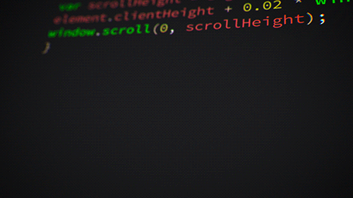

Origem Rust
Rust é uma linguagem de programação multiparadigma compilada desenvolvida pela Mozilla Research. É projetada para ser "segura, concorrente e prática", suportando os estilos puramente funcional, procedural, e orientado a objetos. Possui suporte nativo ao WebAssembly. A linguagem apareceu como um projeto pessoal de Graydon Hoare, empregado da Mozilla. A organização começou a apoiar o projeto em 2009 e anunciou-o em 2010. No mesmo ano, os esforços mudaram do compilador original (escrito em OCaml) para um auto-hospedado feito em Rust. Conhecido por rustc, conseguiu compilar-se pela primeira vez em 2011 e utiliza o LLVM como back-end. Foi lançada pela primeira vez uma versão numerada pré-alfa em 2012. Rust 1.0, a primeira versão estável, foi lançada em 15 de Maio de 2015. Foi considerada pelo público a linguagem "mais amada" por três anos consecutivos, de acordo com uma pesquisa conduzida pelo site Stack Overflow em 2016, 2017, e 2018, e está entre as 25 linguagens mais populares, de acordo com uma pesquisa conduzida pela RedMonk.